0x01Introdução
IoT (Internet das Coisas)
IoT (Internet of Things) é uma rede de conexão de objetos físicos de uso diário, que recebem incorporações de sensores, softwares, dentre outras tecnologias. Em outros termos, a IoT transforma itens comuns em "dispositivos inteligentes", permitindo que eles se conectem, coletem e troquem dados via internet ou outro tipo de comunicação com outros dispositivos e sistemas.
Um dos pilares da transformação digital tem sido a IoT, que tem a capacidade de conectar o mundo físico ao mundo digital. Ela possui 3 fatores principais de destaque:
- Eficiência e Automação Operacional: A IoT reduz significativamente processos manuais. Dispositivos conseguem monitor a si mesmos 24 horas por dia e otimizar suas próprias rotinas.
- Tomada de Decisão Baseada em Dados: Esses dispositivos conseguem gerar um alto volume de dados em tempo real, permitindo a analise de tendências e antecipações de eventos. Transformando decisões que antes eram reativas para preditivas de forma automática.
- Redução de Custos e Sustentabilidade: Com dispositivos IoT é possível monitor de perto consumos de energia, água e matérias-primas com intuito de evitar desperdício. Eles também são desenvolvidos para ter uma boa eficiência energética.
Existem diversas aplicações possíveis para IoT, a versatilidade de componentes de baixo custo e a popularização de automação e dispositivos interconectados permitiu que diversos setores explorassem seu uso. As principais aplicações incluem:
- Indústria 4.0 (IIoT - Industrial IoT): Uso de sensores em linhas de produção para prever falhas mecânicas antes que elas ocorram (manutenção preditiva), além de rastrear estoques e gerenciar a logística automaticamente em armazéns.
- Casas Inteligentes (Smart Homes): Integração de dispositivos de luz, fechaduras biométricas, assistentes de voz e eletrodomésticos para automatizar tarefas cotidianas e aumentar a segurança.
- Cidades Inteligentes: Sistemas de gerenciamento de tráfego com semáforos que se adaptam em tempo real ao fluxo de carros, além de sensores de iluminação pública e gerenciamento de coleta de lixo.
- Agricultura Inteligente (Agro 4.0): Sensores de solo e drones ajudam os agricultores a medir com precisão a umidade, os níveis de nutrientes e o clima, permitindo aplicar água e fertilizantes apenas onde é estritamente necessário.
- Saúde Conectada: Dispositivos vestíveis (wearables) que medem e transmitem os sinais vitais do paciente diretamente para o sistema do hospital, permitindo um acompanhamento médico contínuo e a distância.
LPWAN (Low Power Wide Area Network)
Com essa crescente demanda por dispositivos IoT, veio crescendo a necessidade de novos tipos de conexão. No início, a conectividade se baseava em Wi-Fi (WLAN), Bluetooth (WPAN) ou Redes de Celulares (WWAN), porém, tanto para Bluetooth e Wi-Fi, a principal barreira é o seu alcance, que é tipicamente baixo e dificulta comunicações a uma distância considerável. Já as Redes de Celulares, por mais que conseguissem chegar a longas distâncias, é muito pouco eficiente energeticamente, pois possui um grande consumo de energia e também é cara para aplicações em grande escala.
O LPWAN (Rede de Longo Alcance e Baixo Consumo de Energia) veio com a ideia de suprir esse problema na Internet das Coisas. Ele resolveu o dilema da conectividade sacrificando a velocidade de internet, mas ganhando em eficiência energética e alcance.
O LPWAN possui principalmente 3 pilares:
- Baixo Consumo de Energia (Low Power): O LPWAN não transmite muitos dados como vídeos ou fotos, ele transmite pacotes de dados de alguns bytes, além disso, eles possuem sistemas para ficarem em standby enquanto não é usado. Dispositivos de LPWAN podem funcionar com baterias ou pilhas simples por anos sem precisarem ser trocadas.
- Longo Alcance (Wide Area): Uma única antena LPWAN pode cobrir de 2 a 5 quilômetros em áreas urbanas densas (atravessando concreto e subsolos) e até 30 quilômetros em áreas rurais abertas.
- Baixo Custo: Tanto o hardware (o chip de rádio dentro do sensor) quanto o custo de assinar a rede são frações de centavos se comparados às redes de celular tradicionais.
Ecossistema LoRa (LoRa & LoRaWAN)
Com o universo de dispositivos inteligentes (IoTs) e com a categoria LPWAN de redes de longo alcance, temos uma tecnologia específica que se destaca neste cenário, o ecossistema LoRa.
Dentro do ecossistema temos uma diferença fundamental, o LoRa, que é a modulação física e o protocolo de rede, o LoRaWAN. Basicamente, podemos ver o LoRa sendo as cordas vocais e ondas sonoras para emitir sons em uma comunicação humana, já o LoRaWAN seria o idioma e as regras de comunicação que temos para uma conversa fluir.
- LoRa (Modulação Física): É uma tecnologia de rádio patenteada pela empresa Semtech. Fica na camada física da rede e usa uma técnica chamada Chirp Spread Spectrum (CSS), que modula as ondas de rádio de uma forma que elas conseguem viajar quilômetros de distância e ser captadas mesmo com muito ruído ao redor. O LoRa irá definir como a onda viaja pelo ar.
- LoRaWAN (Protocolo de Rede): É o software, o protocolo de comunicação (camada MAC) gerenciado pela LoRa Alliance (associação aberta sem fins lucrativos). Ele define como os dispositivos conversam com a rede: de que forma os dados são empacotados, como a criptografia funciona, e quando um dispositivo pode transmitir ou deve dormir para poupar bateria.
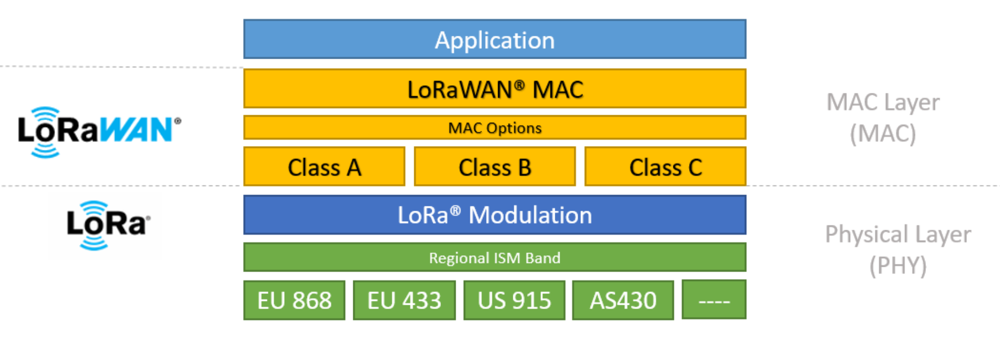
0x02Modulação LoRa (Camada Física)
Chirp Spread Spectrum (CSS)
Para entendermos de fato o LoRa, precisamos descer ao nível do sinal eletromagnético. O protocolo utiliza uma técnica de espalhamento espectral proprietária baseada em Chirp Spread Spectrum (CSS).
Nesse quesito, ele se difere de modulações tradicionais, como o FSK (Frequency Shift Keying) ou QAM (Quadrature Amplitude Modulation), já que historicamente, o CSS foi desenvolvido para aplicações militares e de radares na década de 1940, pois ele possuí uma altíssima resiliência a interferências e ruídos. A empresa Semtech adaptou essa tecnologia para criar o LoRa, focando em comunicações de longo alcance, baixo custo e baixo consumo.
Anatomia do Sinal
Primeiramente, vamos entender como o LoRa divide e empacota a informação. No LoRa, os bits de dados brutos não são transmitidos individualmente. Eles são agrupados em símbolos. O tamanho desse agrupamento e a velocidade da transmissão dependem de parâmetros fundamentais:
- Largura de Banda (BW - Bandwidth): É a faixa de frequência (em Hz) na qual o sinal irá varrer.
- Fator de Espalhamento (SF - Spreading Factor): Define quantos bits de informação cabem em um único símbolo. Um SF de 7, por exemplo, significa que um símbolo carrega 7 bits (\(2^7 = 128\)).
- Duração do Símbolo (\(T_s\)): O tempo que leva para transmitir um símbolo completo. Ele é diretamente proporcional ao SF e inversamente proporcional à BW.
A relação matemática entre esses parâmetros que define a duração do símbolo é dada por: $$T_s = \frac{2^{SF}}{BW}$$
Chirps
A palavra chirp remete ao "pio" de um passarinho. Na física e na engenharia, um chirp é um sinal cuja frequência aumenta ou diminui continuamente ao longo do tempo. No caso do LoRa, lidamos estritamente com variações lineares de frequência.
Matematicamente, a frequência instantânea \(f(t)\) de um chirp linear puro pode ser descrita pela equação: $$f(t) = f_0 + \mu t$$ Onde:
- \(f_0\) é a frequência inicial
- \(\mu\) é a taxa de variação da frequência (chirp rate), calculada pela razão entre a largura de banda (\(BW\)) e a duração do símbolo (\(T_s\)), ou seja, \(\mu = \frac{BW}{T_s}\).
Para termos a visão completa do sinal que realmente viaja pelo ar, precisamos olhar para o domínio do tempo. A fase instantânea \(\phi(t)\) do sinal é a integral da frequência, o que nos leva a uma equação quadrática para a fase: $$\phi(t) = 2\pi \left( f_0 t + \frac{\mu}{2} t^2 \right) + \phi_0$$ Consequentemente, a equação final da onda de tensão \(s(t)\) gerada pelo rádio LoRa é uma senoide com frequência variável: $$s(t) = A \cos\left(2\pi f_0 t + \pi \mu t^2 + \phi_0\right)$$ (Onde \(A\) é a amplitude do sinal e \(\phi_0\) é a fase inicial)
Tipos de Chirps e Modulação de Dados
Existem três tipos principais de chirps no LoRa:
| Tipo de Chirp | Comportamento da Frequência | Função no LoRa |
|---|---|---|
| Up-chirp | A frequência varre linearmente do limite inferior para o limite superior da largura de banda. | Usado no preâmbulo para sincronização do receptor. |
| Down-chirp | A frequência varre do limite superior para o inferior. | Sinaliza o fim do preâmbulo e sincroniza a temporização. |
| Data Chirp | Um up-chirp que sofre um salto cíclico de frequência no meio do símbolo. | Codificar e transmitir a informação útil (payload). |
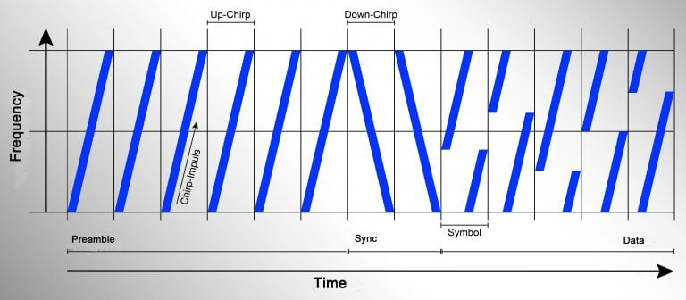
Sobre a codificação da informação, no LoRa, a informação bruta (os bits) não é transmitida diretamente. Os bits são agrupados e mapeados em símbolos. O valor do símbolo determina o momento exato (o atraso temporal ou deslocamento cíclico) em que a rampa de frequência de um up-chirp sofre uma "quebra" e retorna à frequência base antes de continuar subindo.
Esse deslocamento no tempo/frequência é o que o receptor vai analisar para demodular o sinal e recuperar a informação digital. Na imagem abaixo, temos um exemplo de sinal contendo a sequência de bits 11 01 10 00:
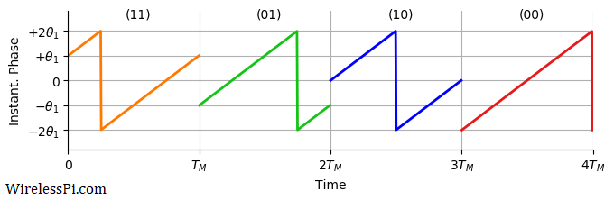
Por que o CSS?
A escolha do CSS no LoRa para IoT não foi acidental, ele resolve os principais problemas de comunicação a longas distâncias com baixa potência:
- Resiliência ao Ruído Branco (AWGN): Como a energia do sinal é "espalhada" por uma banda de frequência muito maior do que a necessária para transmitir a informação bruta, o LoRa consegue ser demodulado mesmo quando o sinal está abaixo do piso de ruído (Noise Floor). O receptor consegue correlacionar os chirps recebidos e "puxar" o sinal de dentro do ruído.
- Imunidade ao Efeito Doppler: Em modulações puramente baseadas em frequência fixa, o deslocamento Doppler (causado pelo movimento do transmissor ou receptor) gera grandes erros. No CSS, um deslocamento Doppler apenas muda ligeiramente o chirp no eixo do tempo. O receptor sincronizado percebe isso como um pequeno erro de sincronismo, mas a variação linear da frequência permanece intacta, preservando a informação.
- Resistência ao Desvanecimento por Múltiplos Caminhos (Multipath Fading): Em ambientes urbanos (onde o sinal bate em prédios e chega em tempos diferentes), os ecos do sinal sofrem interferência construtiva e destrutiva. Como o chirp varre uma banda larga continuamente, o desvanecimento geralmente afeta apenas uma pequena fração do símbolo, permitindo que o receptor recupere o restante sem perda de dados.
Parâmetros de Rádio-Frequência
Na modulação LoRa, a transmissão do sinal no espectro de radiofrequência é governada por três parâmetros principais configuráveis via firmware no transceptor: o Spreading Factor (SF), Bandwidth (BW) e o Coding Rate (CR). Como vimos a cima, tanto o SF, quanto o BW fazem parte da anatomia do sinal e o CR entra como uma taxa de codificação. Compreender a relação matemática entre eles é fundamental para otimizar o Link Budget e a capacidade de uma rede LoRaWAN.
Spreading Factor (SF) - Fator de espalhamento
O SF definirá o número de "chirps" que compõem um único símbolo LoRa. Em termos digitais, ele representa o logaritmo na base 2 do número de chirps por símbolo: $$\text{Número de Chirps por Símbolo} = 2^SF$$
No LoRa comercial, o SF varia tipicamente de SF7 a SF12.
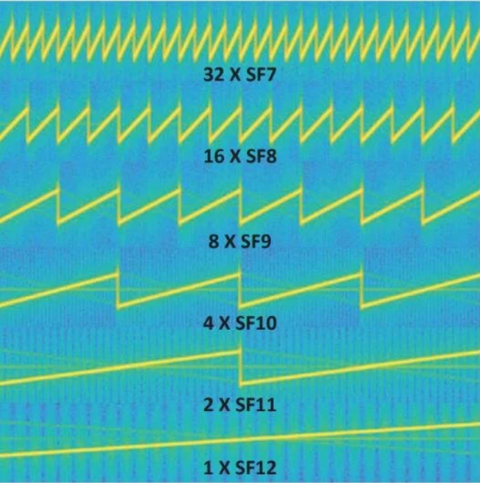
- SF Baixo (ex.: SF7): O símbolo é mais curto no tempo, o que resulta em uma maior taxa de bits e menor tempo de transmissão (Time-on-Air), econoizando bateria. Contudo, a robustez contra ruído é menor e possui menos chirps por símbolo.
- SF Alto (ex.: SF12): O símbolo se estende no tempo, isso aumenta o ganho de processamento (Processing Gain) do receptor, permitindo decodificar sinais com uma relação sinal-ruído (SNR) extremamente desfavorável (até -20dB, ou seja, o sinal está 100 vezes abaixo do piso de ruído). O custo disso é uma taxa de dados drasticamente reduzida e maior consumo de energia.
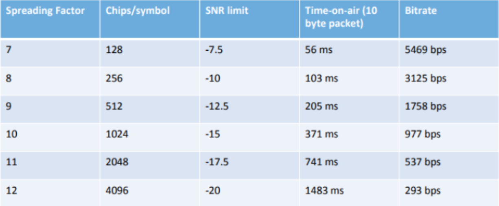
Uma propriedade matemática crucial dos chirps LoRa é que sinais transmitidos na mesma frequência central, mas com SFs diferentes, são ortogonais (ou quase ortogonais). Isso significa que um gateway pode receber múltiplos pacotes simultaneamente no mesmo canal físico, desde que eles usem SFs distintos, criando "canais virtuais".
Bandwidth (BW) - Largura de Banda
A largura de banda representa a extensão física de frequências (em Hz) que o chirp linear varre ao longo do tempo. Os valores padrão estabelecidos pela LoRa Alliance para redes sub-GHz são 125kHz, 250kHz e 500kHz.
A velocidade na qual os chirps são transmitidos (Chip Rate, \(R_c\)) é diretamente igual à largura de banda: $$R_c = BW \quad [\text{chirps/s}]$$
Aumentar a largura de banda permite que o chirp suba ou desça a rampa de frequência de forma muito mais íngreme, reduzindo o tempo do símbolo. No entando, de acordo com a física das comunicações, uma banda mais larga deixa entrar mais potência de ruído térmico no receptor (\(P_n = -174 + 10\log_{10}(BW) + NF\) dBm). Portanto, duplicar a BW (ex.: de 125kHz para 250kHz) reduz a sensibilidade do receptor em 3dB.
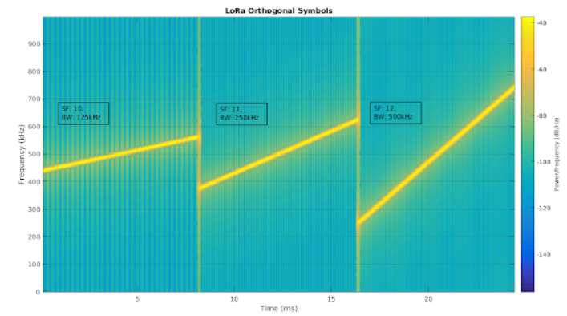
Coding Rate (CR) - Taxa de Codificação
O LoRa utiliza codificação de canal para correção direta de erros (Forward Error Correction - FEC) para proteger a transmissão contra rajadas de interferência (interference bursts). O transceptor adiciona bits de paridade aos bits de dados estruturados em blocos de 4 bits.
O CR é expresso na forma: $$CR = \frac{4}{4+n}$$ Onde \(n \in {1, 2, 3, 4}\), correspondendo às configurações de firmware de 4/5 a 4/8.
- CR 4/5 (\(n = 1\)): Overhead mínimo de 25%. Menor proteção, maior taxa líquida de dados.
- CR 4/8 (\(n = 4\)): Overhead de 100& (o tamanho dos dados dobra). Máxima proteção contra interferências cíclicas ou impulsivas.
Formulação Matemática Unificada
Aqui estão algumas equações preditivas para o comportamento da camada física:
Duração do Símbolo (\(T_s\)):
Como um símbolo contém \(2^SF\) chirps e a taxa de chirps é \(BW\), o tempo necessário para transmitir um único símbolo é:
$$T_s = \frac{2^SF}{BW} \quad [\text{segundos}]$$
Taxa de Bits Nominal (\(R_b\)):
Cada símbolo carrega exatamente \(SF\) bits de informação bruta. Multiplicando a taxa de símbolos pela eficiência do código de correção de erros (CR),
obtemos a taxa líquida de transmissão de dados:
$$R_b = SF \cdot \frac{1}{T_s} \cdot \text{CR} = SF \cdot \frac{BW}{2^{SF}} \cdot \left(\frac{4}{4+n}\right) \quad [\text{bits/s}]$$
Com essa equação, vemos que a taxa de bits diminui exponencialmente com o aumento do SF, mas aumenta linearmente com o aumento da largura de banda (\(BW\)).
É possível analisar os chirps gerados pelos diferentes parâmetros com o simulador abaixo:
Simulador de Modulação CSS
Ajuste os parâmetros físicos para observar o impacto no símbolo e na taxa de transmissão.
Link Budget
O Link Budget (ou Balanço de Enlace) é a contabilidade de todos os ganhos e perdas de potência que um sinal de rádio sofre desde o momento em que sai do circuito transmissor até chegar ao circuito receptor. Em um sistema de rádio, para que a comunicação seja bem-sucedida, a potência do sinal recebido (\(P_{RX}\)) deve ser maior ou igual à sensibilidade mínima do receptor (\(S\)).
A equação geral do balanço de enlace é expressa em decibéis (dB) e potências em dBm: $$P_{RX} = P_{TX} + G_{TX} - L_{path} + G_{RX}$$ Onde:
- \(P_{TX}\): Potência de saída do transmissor (em dBm). Em LoRa, costuma ser 14dBm ou 20dBm (limitado por regulações, como a Anatel aqui no Brasil).
- \(G_{TX} \text{e} G_{RX}\): Ganhos das antenas transmissora e receptora (em dBi).
- \(L_{path}\): Perda de propagação no espaço livre e atenuações por obstáculos (em dB).
A "mágica" do LoRa para atingir quilômetros de distância não está em transmitir com muita força (\(P_{TX}\) alto), mas sim em ter um receptor com uma sensibilidade (\(S\)) incrivelmente baixa.
Sensibilidade do LoRa
A sensibilidade define o menor nível de potência de sinal que o hardware do gateway ou end-node consegue escutar e decodificar com sucesso. No LoRa, ela é calculada pela seguinte equação: $$S = -174 + 10\log_{10}(BW) + NF + SNR_{lim}$$ Analisando cada termo:
- -174 dBm/Hz: É o piso de ruído térmico à temperatura ambiente. É uma constante física.
- \(10\log_{10}(BW)\): O ruído captado aumenta com a largura de banda. Uma banda de 125 kHz adiciona cerca de 51 dB ao ruído térmico.
- \(NF\) (Noise Figure): É o ruído adicionado pelo próprio hardware do receptor (amplificadores LNA, filtros). Em chips como o Semtech SX1276, o \(NF\) é de aproximadamente 6 dB.
- \(SNR_{lim}\): É aqui que o Spreading Factor (SF) atua. É a Relação Sinal-Ruído mínima necessária para o demodulador CSS funcionar. Como vimos, o ganho de processamento do LoRa permite demodular sinais abaixo do piso de ruído. Para SF12, o \(SNR_{lim}\) chega a -20dB.
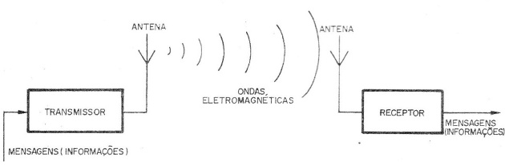
Maximum Link Budget
O Limite Máximo do Balanço de Enlace (\(MCL\) - Maximum Coupling Loss) dita o quão atenuado o sinal pode ser pelo ar e por paredes antes de a comunicação cair. É a diferença entre o que você transmite e o mínimo que você consegue escutar: $$MCL = P_{TX} - S$$
> Calculando Sensibilidade para SF12, BW = 125 kHz
> S = -174 + 10*log10(125000) + 6 + (-20)
> S = -174 + 51 + 6 - 20
> S = -137 dBm (Sensibilidade extrema)
> Calculando Maximum Link Budget (P_TX = 14 dBm)
> MCL = 14 dBm - (-137 dBm)
> MCL = 151 dB
Um Link Budget de 151dB é colossal. Redes de celular tradicionais ou Wi-Fi costumam operar com orgamentos de link na casa de 100dB a 110dB. É essa sobra de mais de 40dB (a escala logarítmica de 40dB representa uma diferença de \(10^4\), ou seja, 10.000 vezes mais tolerância à perda de potência) que permite ao sinal LoRa atravessar dezenas de quilômetros de ar, folhas de árvores, paredes de concreto e até subsolos.
Relação com a Distância (Path Loss)
Se quisermos estimar a distância teórica máxima (\(d\), em km) num cenário de linha de visada (sem obstáculos), usamos o modelo de Perda no Espaço Livre (FSPL - Free Space Path Loss): $$FSPL (dB) = 20\log_{10}(d) + 20\log_{10}(f) + 32.44$$ Onde \(f\) é a frequência central em MHz (por exemplo, 915MHz no Brasil). Quando o FSPL se iguala ao Link Budget máximo do sistema, alcançamos o limite físico da distância da rede. Obviamente, em cenários urbanos reais, usa-se modelos mais complexos (como Okumura-Hata ou Cost231) para descontar as perdas severas de reflexão e difração nos prédios.
0x03Protocolo LoRaWAN
Arquitetura
Como vimos lá no início, o LoRa é o meio físico de transmissão e detalhamos bem ele no tópico anteior, agora vamos falar do LoRaWAN, que é o cérebro que gerencia essa comunicação. Ele opera primariamente como um protocolo de controle de acesso ao meio (MAC) e define a arquitetura da rede do início ao fim.
A topologia de rede do LoRaWAN é a Estrela-de-Estrelas (Star-of-Stars). Em IoT, a topologia mais comum de se encontrar é a rede em malha (Mesh), como temos no Zigbee. Em redes Mesh, os próprios sensores repassam as mensagens uns dos outros até chegarem ao destino, o que consome muita bateria dos nós intermediários. Na topologia estrela do LoRaWAN, os nós finais não fazem roteamento, eles apenas transmitem para a base, economizando o máximo de energia possível.
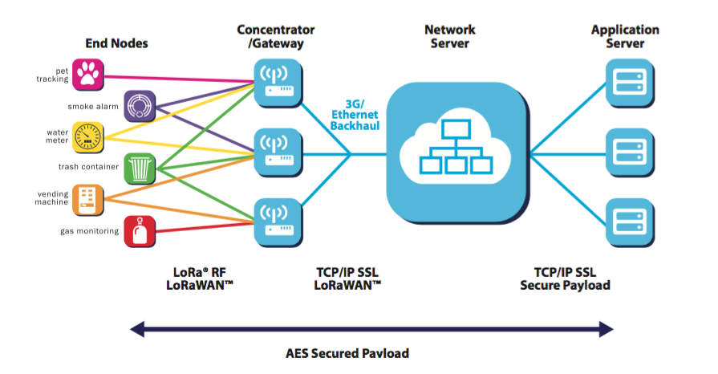
É possível observar na imagem que a arquitetura é dividida em quatro componentes fundamentais:
End-Nodes (Dispositivos/Nós Finais)
São os sensores ou atuadores (nós da rede) espalhados em campo. Eles contêm o microcontrolador e o transceptor de rádio LoRa. A comunicação deles com a rede é baseada no modelo ALOHA puro, quando um sensor tem um dado para enviar, ele simplesmente acorda, transmite no canal de rádio e volta a dormir.
Um diferencial importante no LoRaWAN, é que um End-Node não se associa (pareia) a um Gateway específico, como acontece no Wi-Fi ou Bluetooth. O dispositivo simplesmente "grita" sua mensagem no ar, assim, qualquer Gateway ao alcalce irá "ouvir".
Gateways (Concentradores)
Os Gateways são as pontes de transição de protocolo. Eles possuem transceptores LoRa multicanais (capazes de ouvir múltiplos Spreading Factors e frequências simultaneamente) e uma interface de rede tradicional (Ethernet, Wi-Fi ou 3G/4G/5G).
O papel do Gateway de fato é ser estritamente um retransmissor transparente (um packet forwarder). Ele não processa criptografia, não valida o pacote e não decide nada. Ele apenas encapsula o pacote LoRa recebido (RF) em um pacote UDP/TCP (IP) e o envia para o servidor central.
Network Server (O Cérebro da Rede)
O Servidor de Rede (NS) é o núcleo inteligente da arquitetura LoRaWAN (ex.: The Things Network - TTN, ChirpStack). Como um End-Device não está preso a nenhum Gateway, uma única mensagem transmitida por um sensor pode ser captada por três Gateways diferentes na mesma cidade, os três enviarão essa mesma mensagem via internet para o Network Server.
As principais funções do NS incluem:
- Deduplicação de pacotes: Ele percebe que recebeu três cópias da mesma mensagem, descarta duas e mantém a que chegou com melhor qualidade de sinal (RSSI/SNR).
- Roteamento: Envia o pacote limpo para a aplicação correta.
- Autenticação: Verifica a integridade da mensagem (MIC - Message Integrity Code).
- Controle MAC (ADR): O NS monitora a qualidade do link de cada nó e envia comandos de controle para o nó otimizar sua bateria, ajustando dinamicamente o Spreading Factor e a potência de transmissão (ADR - Adaptive Data Rate).
Application Server (Servidor de Aplicação)
É o destiono final do dado, enquanto o Network Server lida com a manutenção do canal de comunicação e infraestrutura, o Application Server lida com o negócio.
É aqui que o payload (os dados úteis do sensor, como "25ºC e 40% de umidade") é finalmente descriptografado, processado, armazenado em um banco de dados e apresentado em um dashboard para o usuário final.
Exemplo de deduplicação no NS
[NETWORK SERVER LOG - Rx Packet]
> Pacote recebido de Node_ID: 0xABCD1234
> Gateway 1 (Centro): RSSI -95 dBm, SNR 12 dB [CÓPIA 1]
> Gateway 2 (Norte): RSSI -110 dBm, SNR -2 dB [CÓPIA 2]
> Gateway 3 (Leste): RSSI -118 dBm, SNR -10 dB [CÓPIA 3]
> Ação: Descartando cópias 2 e 3 (Baixo SNR/RSSI).
> Ação: Autenticando cópia 1 (MIC OK).
> Encaminhando payload para Application Server...
Classes de Dispositivos
O projeto de um dispositivo LoRaWAN exige que seja decidido o compromisso exato entre consumo de energia e a latência de recepção (downlink). Para padronizar essa relação, a LoRa Alliance dividiu a operação de dispositivos em três classes. Todos os dispositivos LoRaWAN devem, obrigatoriamente, implementar a Classe A, podendo mudar para as Classes B ou C depedendo dos comandos do servidor ou de sua configuração de firmware.
Classe A (Suportada por todos os dispositivos)
A Classe A (de All) é a mais eficiente em termos de energia e a configuração padrão de qualquer nó LoRaWAN. O seu funcionamento dita que a comunicação é sempre iniciada pelo dispositivo (uplink). O servidor nunca consegue "acordar" um dispositivo Classe A por conta própria.
Após transmitir um dado (TX), o rádio do dispositivo abre duas curtas janelas de recepção (RX1 e RX2) em momentos estritamente pré-definidos (geralmente 1 e 2 segundos após o fim da transmissão). Se o servidor de aplicação tiver algum comando para enviar ao nó (como "abra a válvula" ou "mude o Spreading Factor"), o Network Server enfileira essa mensagem e espera o nó transmitir algo. Quando o nó transmite, o servidor aproveita a janela RX1 e RX2 para enviar a resposta de volta.
Após a janela RX2, o dispositivo volta a dormir profundamente (modo sleep de poucos microamperes de consumo) até a próxima transmissão programada.
Classe B (Beacon/Sincronizada)
A Classe B estabelece um meio-termo. Ela é usada quando a aplicação precisa enviar comandos para o nó com uma latência conhecida, sem esperar que o nó decida transmitir um uplink.
- Sincronização no Tempo: Para que o nó saiba exatamente quando acordar para ouvir o servidor, a rede precisa estar sincronizada. Os Gateways transmitem periodicamente um pacote especial chamado Beacon (sinalizador de tempo).
- Ping Slots: O dispositivo Classe B acorda periodicamente, escuta o Beacon para alinhar seu relógio interno e, em seguida, abre janelas de recepção programadas (Ping Slots) em intervalos negociados com a rede. Se o servidor quiser enviar um comando, ele envia no exato momento do próximo Ping Slot. O consumo de bateria é moderado.
Classe C (Contínua)
A Classe C tem o rádio em modo de recepção (RX) contínuo. A janela só se fecha quando o próprio dispositivo precisa transmitir (TX).
- Baixíssima Latência: O servidor pode enviar comandos para o dispositivo a qualquer momento, e ele receberá imediatamente.
- Alto Consumo: Como o transceptor de RF fica constantemente energizado ouvindo o canal, o consumo de energia é altíssimo para os padrões IoT (dezenas de miliamperes continuamente). Dispositivos Classe C não costumam operar com baterias, sendo alimentados diretamente pela rede elétrica.
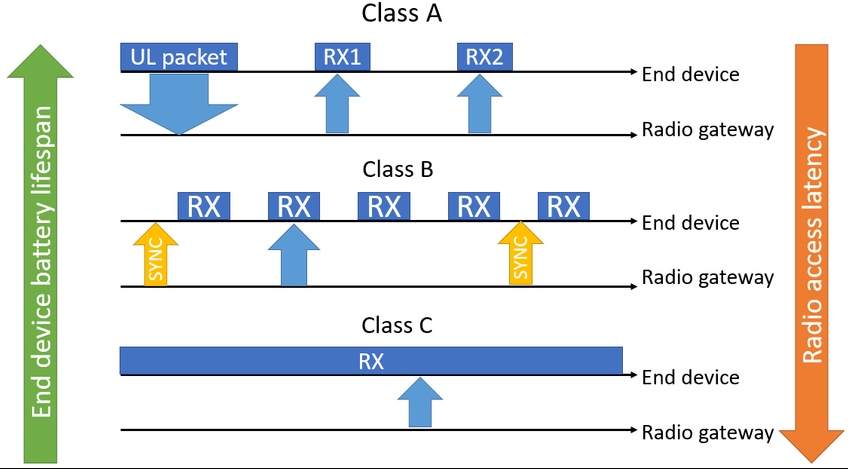
Resumo Comparativo das Classes
| Classe | Modo de RX | Latência Downlink | Consumo |
|---|---|---|---|
| Classe A | Pós-transmissão (RX1, RX2) | Alta (Espera próximo TX) | Mínimo (Anos na bateria) |
| Classe B | Agendada (Ping Slots) | Previsível / Negociada | Moderado |
| Classe C | Contínuo | Mínima (Imediata) | Máximo (Requer alimentação externa) |
0x04Segurança
Em IoT, a segurança é uma área crítica e o LoRaWAN leva isso muito a sério, já que os sinais viajam quilômetros pelo ar (um meio totalmente público e suscetível a interceptações), o protocolo garante confidencialidade, autenticidade e integridade através de criptografia forte.
Criptografia Ponta-a-Ponta
A segurança no LoRaWAN é baseada no padrão industrial de criptografia simétrica AES-128 (Advanced Encryption Standard com chaves de 128 bits). No entanto, o verdadeiro diferencial da arquitetura LoRaWAN é a separação de responsabilidades, garantindo uma criptografia que atua em duas camadas distintas simultaneamente: a camada de rede (MAC) e a camada de aplicação.
Em muitas redes sem fio convencionais, a criptografia ocorre apenas no salto do ar (hop-by-hop), ou seja, do dispositivo até o roteador/gateway. O gateway então descriptografa a mensagem e a lê em texto claro.
No LoRaWAN, a arquitetura garante criptografia ponta-a-ponta verdadeira (end-to-end) do payload. O End-Device criptografa os dados úteis do sensor antes de enviá-los, e esses dados permanecem criptografados ao passar pelo Gateway e até mesmo ao passar pelo Network Server. Somente o Application Server (sob controle absoluto do dono da aplicação) possui a chave correta para abrir o pacote.
Isso faz com que, mesmo que você utilize um Network Server público ou de terceiros (como a The Things Network ou servidores de operadoras de telecomunicação), eles não conseguem ler o que seus sensores estão medindo. Eles apenas gerenciam o tráfeco da rede, preservando a total privacidade dos dados.
Modos de Operação do AES no LoRaWAN
O AES é apenas uma cifra do bloco, a forma como aplicamos essa cifra aos dados (o "Modo de Operação") muda completamente o seu propósito. O LoRaWAN utiliza o AES-128 de duas formas matemáticas diferentes para atingir dois objetivos distintos:
1. Confidencialidade do Payload (AES-CTR)
Para criptografar os dados de aplicação (o FRMPayload), o LoRaWAN utiliza o AES-128 no modo CTR (Counter Mode).
Neste modo, o algoritmo não criptografa os dados diretamente. Em vez disso, a chave de sessão em conjunto com contadores de quadros (Frame Counters) geram um fluxo pseudoaleatório de bytes (keystream). Esse keystream é então
somado aos dados em texto claro através de uma operações lógica XOR (ou exclusivo), bit a bit.
Seja \(P\) o dado em texto claro (Plaintext), a cifra \(C\) gerada será: $$C = P \oplus \text{AES128\_Keystream}$$ A grande vantagem do modo CTR para microcontroladores simples é que a operação de descriptografia é matematicamente idêntica à de criptografia (basta aplicar o XOR novamente com o mesmo keystream para recuperar o dado), o que otimiza muito o uso de memória (Flash/RAM) no nó final.
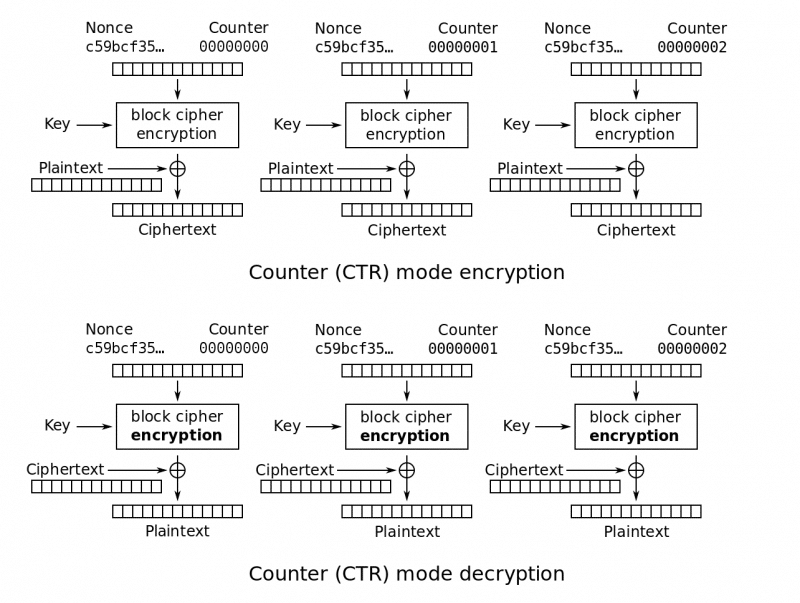
2. Integridade e Autenticidade (AES-CMAC)
Garantir que ninguém leia a mensagem (confidencialidade) não impede que um atacante capture a mensagem de rádio e a reenvie depois (Ataque de Repetição ou Replay Attack), ou modifique seus bits aleatoriamente no ar.
Para evitar isso, o LoRaWAN adiciona um código de integridade ao final de toda mensagem, chamado MIC (Message Integrity Code). O MIC é calculado rodando o pacote inteiro em um algoritmo de hash baseado em cifra, o AES-CMAC (Cipher-based Message Authentication Code). $$\text{MIC} = \text{AES128_CMAC}(\text{Chave_de_Rede}, \text{Mensagem_Completa})[0..3]$$ O resultado é truncado para os primeiros 4 bytes e anexado ao fim do pacote LoRa. Quando o Network Server recebe o pacote, ele recalcula o AES-CMAC. Se o MIC gerado por ele não bater perfeitamente com os 4 bytes recebidos, o pacote é imediatamente descartado como fraude ou corrupção.
> ESTRUTURA DO PACOTE LORAWAN E CAMADAS DE CRIPTOGRAFIA
[ ! ] FRMPayload (Vermelho): Apenas o Application Server consegue ler.
[ ! ] MIC (Ciano): O Network Server valida para garantir integridade e rejeitar ataques.
Chaves de Sessão
Para que a criptografia ponta-a-ponta funcione de forma segura, o LoRaWAN utiliza um sistema hierárquico de chaves baseadas em AES-128. O coração dessa arquitetura (considerando a especificação base LoRaWAN 1.0.x, mais comum no mercado) reside em uma chave raiz e duas chaves de sessão derivadas.
Chave Raiz: AppKey (Application Key)
A AppKey é a "chave-mestra" do dispositivo. É uma chave AES de 128 bits gerada pelo fabricante ou pelo engenheiro de software no momento da gravação do firmware.
A AppKey nunca é transmitida pelo ar. Ela fica gravada de forma segura na memória do microcontrolador (ou em um elemento seguro de hardware) e cadastrada previamente no servidor de autenticação (Join Server).
A sua única função é servir de semente para derivar as chaves de sessão.
Chaves de Sessão (Session Keys)
Quando o dispositivo se conecta à rede (um processo que veremos a seguir), a AppKey é submetida a uma função criptográfica junto com alguns números aleatórios da rede para gerar duas chaves temporárias.
O dispositivo as manterá ativas até ser reiniciado ou forçado a renegociar uma nova sessão.
- NwkSKey (Network Session Key): É a chave entregue ao Network Server. Ela é usada exclusivamente para calcular e validar o MIC (Message Integrity Code) usando o AES-CMAC. É com essa chave que a rede garante que o pacote não foi forjado ou alterado por um hacker. Além disso, ela é usada para criptografar comandos puramente de rede (comandos MAC), como requisições para mudar o Spreading Factor no nó (ADR). O Network Server não pode usar essa chave para descriptografar os dados do sensor.
- AppSKey (Application Session Key): É a chave entregue ao Application Server. Ela é usada exclusivamente para criptografia e descriptografia do payload da aplicação (os dados do sensor) usando o modo AES-CTR. O Network Server não tem essa chave.
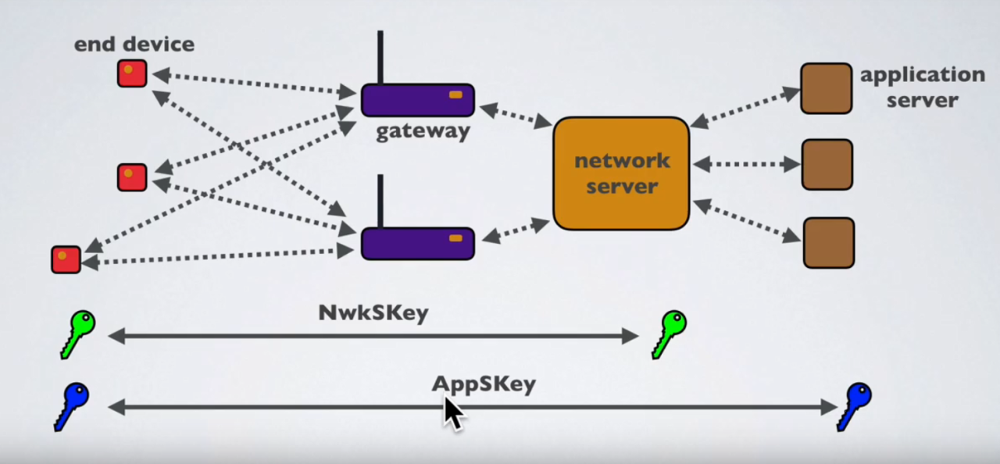
Matemática da Derivação de Chaves
Bom, vamos entender como isso é calculado no microcontrolador. As chaves de sessão são geradas submetendo blocos de dados específicos a uma operação de criptografia (AES-128 no modo ECB) usando a AppKey como chave cifradora.
A derivação segue as equações formais de especificação LoRaWAN: $$NwkSKey = aes128\_encrypt(AppKey, 0x01 \,|\, JoinNonce \,|\, NetID \,|\, DevNonce \,|\, pad_{16})$$ $$AppSKey = aes128\_encrypt(AppKey, 0x02 \,|\, JoinNonce \,|\, NetID \,|\, DevNonce \,|\, pad_{16})$$ Onde o operador $|$ denota concatenação, e os parâmetros são:
-
0x01e0x02: Prefixos constantes que garantem que as chaves geradas sejam completamente diferentes. -
JoinNonce: Um número pseudoaleatório fornecido pelo Servidor de Rede. -
NetID: Identificador único da rede (ex.: ID da The Things Network). -
DevNonce: Um número gerado pelo próprio dispositivo (End-Device) para evitar ataques de repetição. - \(pad_{16}\): Zeros adicionados para completar o bloco de 16 bytes do AES.
(Assinatura MIC)
(Criptografia do Payload)
OTAA e ABP
0x05Análise Comparativa
LoRaWAN vs NB-IoT e Sigfox
LoRaWAN vs Redes Locais
0x06Implementação Prática
Sobre o Projeto
Circuito e Componentes
Desenvolvimento do Código
Testes da Implementação
0x07Conclusão e Referências
Bibliografia
-
SEMTECH CORPORATION. AN1200.22: LoRa Modulation Basics. Application Note, 2015.
Disponível em: frugalprototype.com -
LORA ALLIANCE. LoRaWAN® 1.1.0 Specification. 2020.
Disponível em: resources.lora-alliance.org -
THE THINGS NETWORK (TTN). LoRaWAN Documentation.
Disponível em: www.thethingsnetwork.org - ADELANTADO, Ferran, et al. Understanding the Limits of LoRaWAN. IEEE Communications Magazine. 55. 10.1109/MCOM.2017.1600613. 2017.
- BOR, Martin C., et al. Do LoRa Low-Power Wide-Area Networks Scale?. In: Proceedings of the 19th ACM International Conference on Modeling, Analysis and Simulation of Wireless and Mobile Systems (MSWiM), 2016.
- BERTOLETI, Pedro. Conectividade LoRaWAN: Fundamentos e Prática. São Paulo: Editora NCB, 2023.
- Kurose, J. F., & Ross, K. W. Redes de Computadores e a Internet: Uma Abordagem Top-Down.